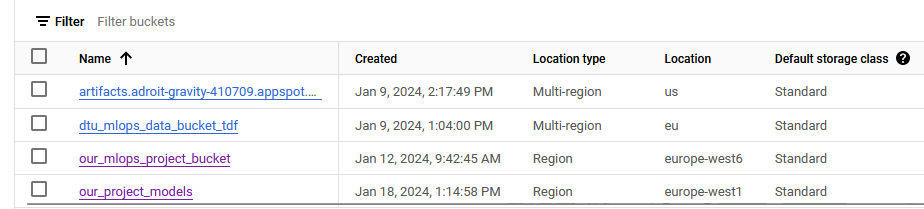

ou signed up on
Answer:
--- 36 ---
Enter the study number for each member in the group
Example:
sXXXXXX, sXXXXXX, sXXXXXX
Answer:
--- s194324, s194644, s194329 ---
What framework did you choose to work with and did it help you complete the project?
Answer length: 100-200 words.
Example: We used the third-party framework ... in our project. We used functionality ... and functionality ... from the package to do ... and ... in our project.
Answer:
--- The main model for cat image generation is a variational auto encoder (VAE). We wrote a simple convolutional neural network (CNN) ourselves using PyTorch. To compute the loss, however, we employed a third-party tool, the Structural Similarity Index (SSIM) loss function from Monai, since this loss is based on a measure of similarity between two given images. We would like to increase similarity as much as possible
between our input (a cat image) and output (reconstruction of the image), why this loss seemed fitting. Nevertheless, using the SSIM loss resulted in poor results, so the Mean Squared Error (MSE) loss function from PyTorch was used instead which produced more promising results. Hence, our final model is trained using the MSE loss function. To reduce boilerplate code, pytorch_lightning is used for training the model. The use of this framework enables several beneficial functionalities, such as early stopping and distributed training. The use of the library Hydra ensured easy management of hyperparameters during training and enabled sweeping for optimal parameters. ---
In the following section we are interested in learning more about you local development environment.
Explain how you managed dependencies in your project? Explain the process a new team member would have to go through to get an exact copy of your environment.
Answer length: 100-200 words
Example: We used ... for managing our dependencies. The list of dependencies was auto-generated using ... . To get a complete copy of our development environment, one would have to run the following commands
Answer:
--- The management of dependencies was handled somewhat manually. Every time a new package was used in the project it needed to go into the respective requirements file. Continuous integration for unittesting our main branch was applied to our GitHub repository. These tests checked whether necessary packages in the tested scripts were present in our requirements list. However, these tests do not cover all our scripts and code, hence for this to be more foolproof it naturally requires a more extensive amount of tests with good coverage. Furthermore, our two docker images (one for training, the other for predictions) include our requirements, thus if these images run without package-related issues, our dependencies concerning training and testing are handled. ---
We expect that you initialized your project using the cookiecutter template. Explain the overall structure of your code. Did you fill out every folder or only a subset?
Answer length: 100-200 words
Example: From the cookiecutter template we have filled out the ... , ... and ... folder. We have removed the ... folder because we did not use any ... in our project. We have added an ... folder that contains ... for running our experiments. Answer:
--- The project was initialized using the cookiecutter template provided in the M6 module of the course. The overall structure can be seen here. More folders have been added: With the use of DVC for data version control a ".dvc" folder is added, a "conf" folder for the configuration files for Hydra, and an "instructions" folder gathering all commands required to solve a specific task. For example, the file build_docker.txt details the commands needed to build a Docker image and run it afterward. The "visualize" folder was not used; Our project aimed to use a VAE to create more images of cats which means the predict function worked more as an inference script generating images of cats by parsing noise through the decoder. There was not the same need for a dedicated prediction script, so we tracked inputs and their corresponding reconstructions using Weights & Biases (W&B). ---
Did you implement any rules for code quality and format? Additionally, explain with your own words why these concepts matters in larger projects.
Answer length: 50-100 words.
Answer:
--- Yes. We aimed to follow the pep8 conventions i.e. classes are with capital starting letters, while functions with small letters where words are separated using underscores. This made it easier to quickly recognize a function from a class. Furthermore, we have included typing and doc strings in our functions, however, some function descriptions are more thorough. In Python it is not necessary to declare the type of variables, therefore it is a good practice to enter the types in the function heads to easier understand the input and output of functions. ---
In the following section we are interested in how version control was used in your project during development to corporate and increase the quality of your code.
How many tests did you implement and what are they testing in your code?
Answer length: 50-100 words.
Example: In total we have implemented X tests. Primarily we are testing ... and ... as these the most critical parts of our application but also ... .
Answer:
--- In total, we have implemented two test files (data and model) each consisting of three and five assert statements respectively. The data testing included primarily testing of the image shapes and pixel value range while the model testing mostly consisted of checking image and output dimensions. For example, whether the model's forward pass outputted the expected shapes and if the image generation had the correct shape as well. ---
What is the total code coverage (in percentage) of your code? If you code had an code coverage of 100% (or close to), would you still trust it to be error free? Explain you reasoning.
Answer length: 100-200 words.
Example: The total code coverage of code is X%, which includes all our source code. We are far from 100% coverage of our ** code and even if we were then...*
Answer:
--- The total code coverage of our code is $81\%$. Unittests have been implemented for testing the processed data and our image generation model. As we implemented pytorch_lightning our training script is quite packed in a few lines of code, therefore more difficult to test in the same way. Hence, we chose not to use unittesting on our train_model.py script. Even with $100\%$ coverage of our code, it is not a guarantee to trust the code to be $100\%$ error-free. These types of tests cannot account for mathematical errors or errors related to model performance. ---
Did you workflow include using branches and pull requests? If yes, explain how. If not, explain how branches and pull request can help improve version control.
Answer length: 100-200 words.
Example: We made use of both branches and PRs in our project. In our group, each member had an branch that they worked on in addition to the main branch. To merge code we ...
Answer:
--- Despite the advantages of branches and pull requests, we hardly used them in our workflow. The pros of using pull requests are that the main branch is more "protected" as pushing changes to the main branch needs to be checked by one or more other developers. As our group and project are rather small, and we worked on the code together, using pull requests seemed superfluous. Branches allow for experimentation without the fear of ruining the already deployed and working model. We only created a single branch, for experimenting with the third-party (Monai) SSIM loss function in our model. ---
Did you use DVC for managing data in your project? If yes, then how did it improve your project to have version control of your data. If no, explain a case where it would be beneficial to have version control of your data.
Answer length: 100-200 words.
Example: We did make use of DVC in the following way: ... . In the end it helped us in ... for controlling ... part of our pipeline
Answer:
--- We did make use of DVC in the following way: Added the data on Google Drive using DVC and afterward linked it to a Google Cloud Bucket which was shared among our group members. This helped us to easily share the data in the group as it could be pulled locally using a single command. However, we never used other versions of the data, and thus did not use DVC for version control, nevertheless, if in the future there is a need for another data version it can be easily managed. ---
Discuss you continues integration setup. What kind of CI are you running (unittesting, linting, etc.)? Do you test multiple operating systems, python version etc. Do you make use of caching? Feel free to insert a link to one of your github actions workflow.
Answer length: 200-300 words.
Example: We have organized our CI into 3 separate files: one for doing ..., one for running ... testing and one for running ... . In particular for our ..., we used ... .An example of a triggered workflow can be seen here:
Answer:
--- We have applied continuous integration (CI) by both using unittesting with GitHub Actions and trigger a workflow for automatically updating Docker images in Google Cloud. Our unittesting is organized into two separate files; One for running data testing and one for model testing. These tests are all in a single folder, "tests". Our CI is integrated with GitHub Actions such that each time changes are pushed to the main branch the unittests implemented will run. The tests are run on a single operating system (ubuntu-latest), as we experienced errors with using multiple operating systems since the test runs were queued for about 48 hours and then failed to run. In addition, we also only tested for a single Python version, namely 3.11. An example of a triggered workflow can be seen here. For trigger workflow, we are building two Docker images; one for training and the other for prediction (inference). Likewise, the build is triggered when changes are pushed to the main branch. This trigger is time-efficient, as it is not necessary to remember to build a new training and prediction Docker image locally each time changes are made. Instead, the images can be easily pulled from the Cloud when needed. ---
In the following section we are interested in learning more about the experimental setup for running your code and especially the reproducibility of your experiments.
How did you configure experiments? Did you make use of config files? Explain with coding examples of how you would run a experiment.
Answer length: 50-100 words.
Example: We used a simple argparser, that worked in the following way: python my_script.py --lr 1e-3 --batch_size 25
Answer:
--- We used Hydra for configuring our experiments, where configuration files for our data and the model and training experiments were created. To conduct a new experiment, one has to create a new experiment configuration file in the folder conf/experiments where the various hyperparameters are set to the desired value. To train a model using the new configuration it must be passed onto the training command as such: python vae_cats/train_model.py experiments=<my_new_exp>. Furthermore, for model inference, we implemented an argparser to pass on a trained model to generate cat images. ---
Reproducibility of experiments are important. Related to the last question, how did you secure that no information is lost when running experiments and that your experiments are reproducible?
Answer length: 100-200 words.
Example: We made use of config files. Whenever an experiment is run the following happens: ... . To reproduce an experiment one would have to do ...
Answer:
--- We made use of config files to keep track of hyperparameter experiments used for training. The respective experiment configuration file is attached to the command run for training. As we have included W&B to monitor the training process, the same command can be found in the W&B run (overview $\rightarrow$ command), and thus which configuration experiment was used. Furthermore, the configuration file includes a seed, which is then set before initializing the CNN and running training, making the results reproducible. Thus, to reproduce an experiment, one has to find which experiment configuration file was used (found in W&B) and then run the training script with that respective configuration. ---
Upload 1 to 3 screenshots that show the experiments that you have done in W&B (or another experiment tracking service of your choice). This may include loss graphs, logged images, hyperparameter sweeps etc. You can take inspiration from this figure. Explain what metrics you are tracking and why they are important.
Answer length: 200-300 words + 1 to 3 screenshots.
Example: As seen in the first image when have tracked ... and ... which both inform us about ... in our experiments. As seen in the second image we are also tracking ... and ...
Answer:
As seen in the first image where the learning rate and loss are tracked, both show a decreasing curve as expected. A learning rate scheduler is used which is why the learning rate decreases. More specifically, it drops its current value to half if the training loss does not decrease during 10 steps. In the learning rate figure it can be seen, that this particular experiment had a starting learning rate of 0.01. Next, observing the training loss curve, we have a steady decrease in the loss. As a consequence of early stopping in the training, if the loss still does not decrease after 25 steps, the training is terminated. For this particular run the training did not reach the maximum of 500 epochs ($\sim$ 13500 steps) which was set in the experiment.
During training, we also tracked the input images and their respective reconstruction (output of the model), such an example is seen in the following two images. This does not tell us anything in particular about our experiment parameters, however, it visualizes how well the model is at reconstructing cat images in the training set. Hence, giving a relatively decent indication of the current model performance. ---
Docker is an important tool for creating containerized applications. Explain how you used docker in your experiments? Include how you would run your docker images and include a link to one of your docker files.
Answer length: 100-200 words.
Example: For our project we developed several images: one for training, inference and deployment. For example to run the training docker image:
docker run trainer:latest lr=1e-3 batch_size=64. Link to docker file:Answer:
--- For our project, we developed several images: one for training and one for testing. When running our docker training images a few arguments are needed; As we use Weights & Biases (W&B) an API key for a W&B account is needed, the trained model has to be mounted to get it locally as well, and lastly the local data must be mounted onto the image. A run example of a Docker training image: docker run -e WANDB_API_KEY=<key> -v "$(pwd)"/models:/models -v "$(pwd)"/data:/data --name run1 trainer:latest experiments=exp2. Link to the training Docker file can be found here. For running the prediction Docker image only the newly trained model has to be mounted onto the image, moreover the model is then passed to the script with the argparse command --model. An example run of the image: docker run --name run_pred1 --rm -v "$(pwd)"/models/my_model.pt:/models/my_model.pt predict:latest --model models/my_model.pt ---
When running into bugs while trying to run your experiments, how did you perform debugging? Additionally, did you try to profile your code or do you think it is already perfect?
Answer length: 100-200 words.
Example: Debugging method was dependent on group member. Some just used ... and others used ... . We did a single profiling run of our main code at some point that showed ...
Answer:
--- As it is with everything the debugging depended on the person. We have to admit that print statements are the way we usually go about this, and this project was no exception. From time to time with scripts taking a longer time to run we used the debugging tool in VS code. We did a profiling of the preprocessing process of the raw data as this was the script whose run time was only succeeded by that of the training script. The training script, however, was implemented using pytorch-lightning so there was not much optimization we could do on our part. The profiling did not make that much of a difference as we chose data already preprocessed, why our script only had to read, resize, and save the images. ---
In the following section we would like to know more about your experience when developing in the cloud.
List all the GCP services that you made use of in your project and shortly explain what each service does?
Answer length: 50-200 words.
Example: We used the following two services: Engine and Bucket. Engine is used for... and Bucket is used for...
Answer:
--- We used several GCP services in our project including Bucket, Cloud Function, Trigger, and Artifacts Registry. The Bucket was used for storing our data. Several people can gain access to it and it can be linked with Google Drive and pulled and pushed using DVC. Cloud Triggers are used to enable continuous integration. Depending on the configuration the trigger listens to incoming events and automatically starts building. In this project, the triggers are used to automatically build our docker images for training and prediction each time changes are pushed to the main branch. The resulting images are then stored in the Artifacts Registry, these images can afterward be pulled locally as well. Cloud Functions is a serverless way of deploying one's model. In this project, it is used to make a user able to generate an 8 $\times$ 8 grid of cat images. ---
The backbone of GCP is the Compute engine. Explained how you made use of this service and what type of VMs you used?
Answer length: 100-200 words.
Example: We used the compute engine to run our ... . We used instances with the following hardware: ... and we started the using a custom container: ...
Answer:
--- We used the Compute Engines when training the model using vertex AI. This service creates virtual machines and deletes them afterward when they are no longer in use. We used the instances with the following hardware "n1-highmem-4" (CPU) and started the training using our custom training Docker images. Since our model is a rather small CNN it was realistic to train on a CPU, which is the cheaper option compared with training on a GPU. Except for the possibility of forgetting to turn off one's Computing Engines, and thus consequently burning through all one's credits rather quickly, this is a very nice and appreciated feature. ---
Insert 1-2 images of your GCP bucket, such that we can see what data you have stored in it. You can take inspiration from this figure.
Answer:
--- 
Upload one image of your GCP container registry, such that we can see the different images that you have stored. You can take inspiration from this figure.
Answer:
---
Upload one image of your GCP cloud build history, so we can see the history of the images that have been build in your project. You can take inspiration from this figure.
Answer:
---
Did you manage to deploy your model, either in locally or cloud? If not, describe why. If yes, describe how and preferably how you invoke your deployed service?
Answer length: 100-200 words.
Example: For deployment we wrapped our model into application using ... . We first tried locally serving the model, which worked. Afterwards we deployed it in the cloud, using ... . To invoke the service an user would call
curl -X POST -F "file=@file.json"<weburl>Answer:
--- At first, we created a FastApi application that could generate images using our VAE locally. This could then be utilized when we had to deploy our model in the cloud since it follows somewhat the same structure. We deployed the model in the cloud using Cloud Functions. Cloud Run could also be applied to deploy, but since our model is rather small and not complex, it was easy to do using Cloud Function. The deployed model does not take any input from the user, since it generates new images. Therefore to use the deployed model, it can be invoked simply by entering the webpage https://europe-west1-dtumlops-410911.cloudfunctions.net/cats_mlops. Every time the user updates the page, new images will be generated and plotted. ---
Did you manage to implement monitoring of your deployed model? If yes, explain how it works. If not, explain how monitoring would help the longevity of your application.
Answer length: 100-200 words.
Example: We did not manage to implement monitoring. We would like to have monitoring implemented such that over time we could measure ... and ... that would inform us about this ... behaviour of our application.
Answer:
--- Since our model does not take any input and does not measure accuracy, data drifting and performance monitoring is rather difficult to perform. The only thing that we could monitor is system telemetry, where we look at the standard metrics that Google Cloud provides. Furthermore, we created a service level objective (SLO), that measures the latency, and how many percentages that are higher than a threshold we have set. Monitoring in general can help longevity by performing data drifting, which ensures the developers, whether the input data follows the same distribution as the data the model is trained upon. If not, the model might have to be retrained to fit the new distribution better. Moreover, the monitoring can set up alarms that warn the developers, if the model performance begins to be lower than a certain threshold. It can also check if the system is getting increased counts, or getting a higher latency and alarm if it is becoming a problem. This can help to maintain the deployed model and the user experience. ---
How many credits did you end up using during the project and what service was most expensive?
Answer length: 25-100 words.
Example: Group member 1 used ..., Group member 2 used ..., in total ... credits was spend during development. The service costing the most was ... due to ...
Answer:
--- Group member 1 used 0.06 credits, group member 2 used 4.0, and group memeber 3 used 0.01. In total 4.07 credist was spend during the development of this project. ---
In the following section we would like you to think about the general structure of your project.
Include a figure that describes the overall architecture of your system and what services that you make use of. You can take inspiration from this figure. Additionally in your own words, explain the overall steps in figure.
Answer length: 200-400 words
Example:
The starting point of the diagram is our local setup, where we integrated ... and ... and ... into our code. Whenever we commit code and puch to github, it auto triggers ... and ... . From there the diagram shows ...
Answer:
The overall architecture can be seen in the following figure:
At the core we have PyTorch, as this is what we used to implement the model. To reduce boilterplate PyTorch_Lightning is used during training, which enables distributed training and early stopping. Logging the experiments was done with the use of Weightd and Biases, and managed by the Python library Hydra. These frameworks also work great with PyTorch_Lightning. For managing Python environments we employed Conda. Our framework was wrapped into a Docker image, including all the necessary packages, which then easily can run our application on any other devices. In terms of code structure, the entire project was made using a CookieCutter template posted to GitHub. Version control of the code is enabled by using GitHub. Clould Build enabled trigger workflow of Docker images for training and prediction to be made automaically each time changes are puched to the main branch. In addition GitHub Actions are linked to our unittests, which likewise tests new implementations when pushed to the main branch. Our data was firstly stored locally, then DVC was used to save it in a Google Drive folder, finally the Google Drive was linked with a GCP Bucket using DVC to have the data stored in a Bucket instead.
Vertex AI are able to run the docker images built using the trigger workflow and the data from our bucket. Using another bucket the resulting trained models are saved. Those models can
then be utilized by cloud functions for deployment.
Discuss the overall struggles of the project. Where did you spend most time and what did you do to overcome these challenges?
Answer length: 200-400 words.
Example: The biggest challenges in the project was using ... tool to do ... . The reason for this was ...
Answer:
--- We definitely spent the most time with getting Docker to work. None of us have worked with it before so there was a lot of new things to learn. Getting it to work with dvc proved tiresome, and we eventually chose to not include the data in the docker images altogether. The individual building blocks to the whole MLops setup are somewhat understandable when working with them, but when all components need to work together it gets very challenging. The type of errors you encounter in this course are very different from errors we usually encounter in courses. We needed to include something from a third party in the project. We wrote the model ourselves in order to control the size and thereby the training time. The third party then came in the choice of loss function. We spent quite some time experimenting with different reconstruction loss functions from Kornia and Monai, where none gave any promising results. We also encountered issues with GitHub actions as our tests were queued for 48 hours so validating they worked was a time-consuming process. When it comes to training, parsing the right arguments, such as the WAND_API_KEY seems trivial when looking back, but in the moment it is difficult to find the exact correct way. ---
State the individual contributions of each team member. This is required information from DTU, because we need to make sure all members contributed actively to the project
Answer length: 50-200 words.
Example: Student sXXXXXX was in charge of developing of setting up the initial cookie cutter project and developing of the docker containers for training our applications. Student sXXXXXX was in charge of training our models in the cloud and deploying them afterwards. All members contributed to code by...
Answer:
s194644: deployment, fast_api, monitoring, training including lightning, model implementation, logging to wandb s194324: docker, model implementation, data version control, snacks, hydra configurations, unittest, trigger workflow s194329: vertex AI, make_dataset, docker, model implementation, data version control, snacks, profiling, trigger workflow, distributed dataloading and training
Generally we worked together a lot. We have been sitting together everyday, asking each other for help, so we almost all contributed to each part of the project.
{kind=link}
{kind=link}
{kind=link}
{kind=link}
{kind=link}